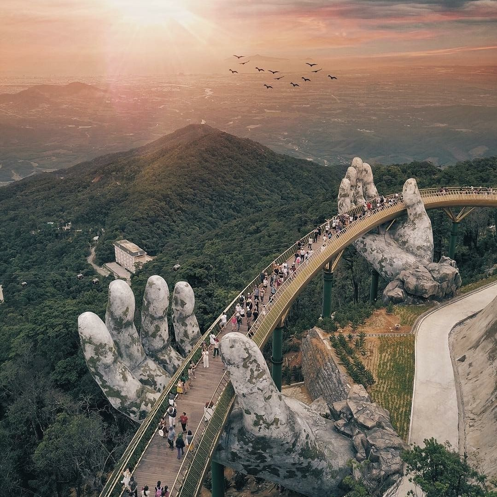

Da Nang City
#guest1
Recognized as a UNESCO World Heritage site, the My Son Sanctuary is a large cluster of abandoned Hindu temples, constructed between the 4th and the 14th centuries A.D. by the Champa civilization. They are referred to as the Angkor Wat of Vietnam. The ruins are both enchanting and photogenic, as they are overgrown with weeds and surrounded by mountains.
#guest2
Ba Na Hills is a French hill station resort located on a mountain. You will find structures that resemble French castles, as well as gorgeous courtyards, cobblestone streets, giant Buddha statues, underground wine cellars, Asia’s longest cable car ride, beautiful nature, and sweeping views.
#guest3
The Marble Mountains are a cluster of five unique conical-shape limestone mountains that are home to a labyrinth of tunnels, pagodas, and caves. There are plenty of awesome views of the beautiful Danang coast for you to snap photos of.
#guest4
My Khe Beach has developed a reputation for being one of the most luxurious beaches in Vietnam. Spend your time sunbathing or partaking in watersports while snapping some adventurous Instagram shots.